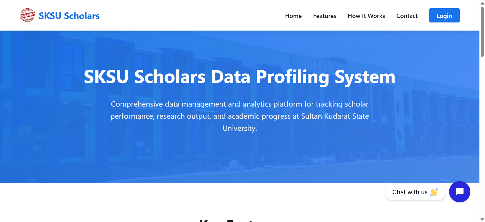
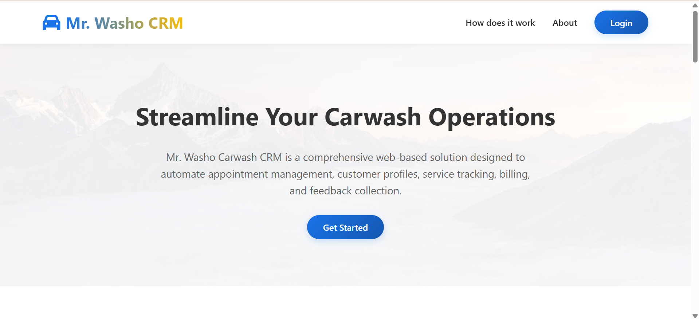
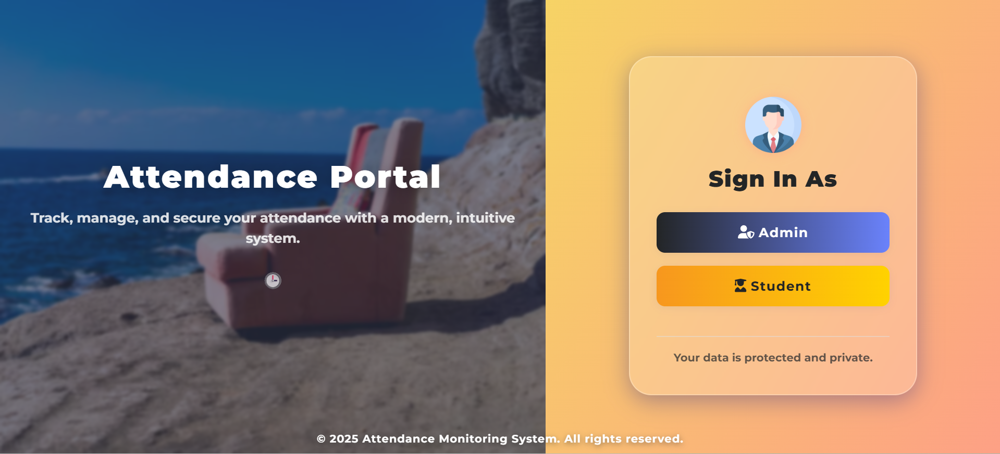

Web systems
PHP, CodeIgniter, Laravel, JavaScript, and responsive interfaces.
IT student · Web developer · IoT builder
I build practical web systems and connected hardware projects that make everyday work clearer, faster, and more reliable.
I am an Information Technology student and developer with a focus on web systems, databases, and Arduino integration. My work combines thoughtful interfaces with the practical details that make systems dependable.
I am especially interested in work that connects people, data, and hardware—from attendance and inventory systems to connected IoT projects.
PHP, CodeIgniter, Laravel, JavaScript, and responsive interfaces.
MySQL-backed management tools, reporting, tracking, and automation.
Arduino, ESP32, RFID, sensors, and database-connected prototypes.
Three systems that show how I approach real operational problems.

Centralizes scholar records, reporting, and visual analytics to support accurate monitoring and program compliance.

Organizes customer records, service transactions, and visit history in a streamlined operational workflow.

Tracks attendance through QR codes with real-time monitoring, automated reporting, and analytics.
A selection of web systems and Arduino prototypes.
Alocada Enterprises
Managed inventory data and improved stock-management workflows through digital tools.Independent projects
Designed custom web-based management systems and hardware-integrated solutions.Academic projects
Coordinated school development teams across software and hardware work.Sultan Kudarat State University
Current student; recognized on the Dean's List and President's List.Sto. Niño National High School
Built a foundation in analytical thinking and technical problem-solving.04 / Contact
I’m open to opportunities, collaboration, and conversations about web systems and IoT projects.
Email Von ↗